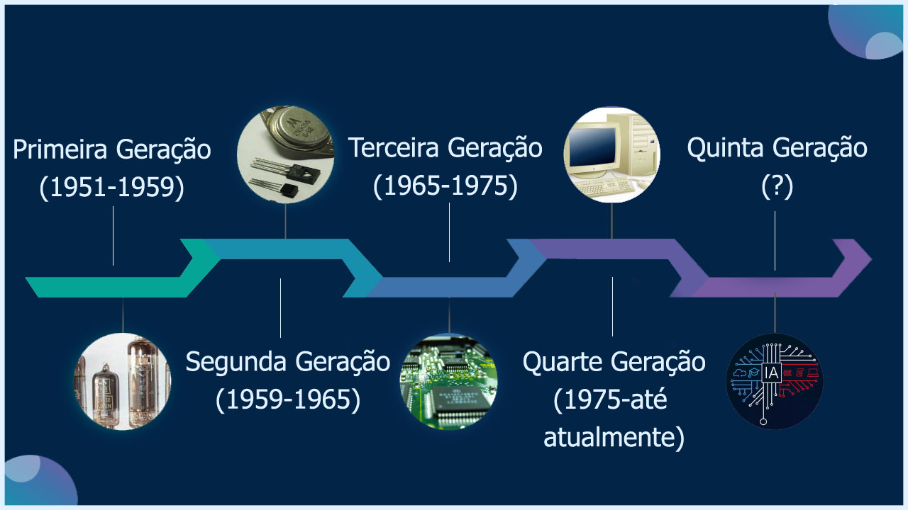

História dos computadores
° A palavra “computador” vem do verbo “computar” que, por sua vez, significa “calcular”.
° desde antigamente as pessoas buscam maneiras de facilitar calculos o primeiro instrumento utilizado pra isso foi o ábaco, por volta de 2000 a.C.
° Os primórdios dos computadores surgiram como intuito de facilitar o cotidiano das pessoas.
Já que iremos mostrar das gerações da informática vamos mostrar a sua evolução.
